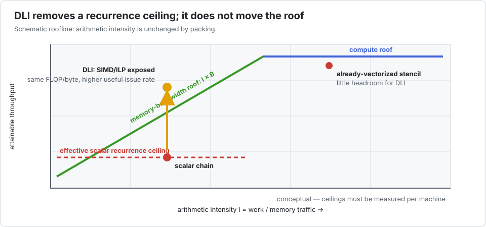
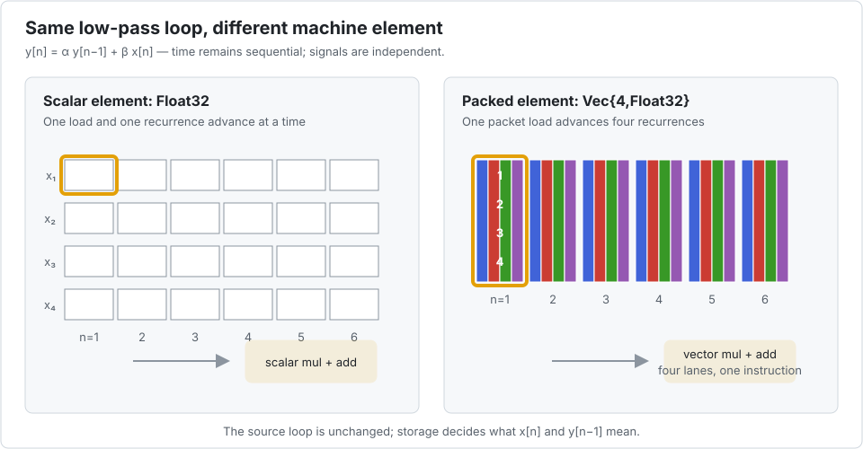

Interleave.jl
Keep the recurrence. Vectorize the population.
Interleave turns a batch of independent, intrinsically sequential problems into SIMD work. You keep one readable kernel; changing the array type changes what one element means to the CPU.
Many useful algorithms contain a hard dependency:
\[y_i = f(x_i, y_{i-1}, y_{i-2}, \ldots).\]
The value at $i$ cannot be computed before $i-1$. A compiler cannot safely execute those two iterations together. But if you have hundreds of independent filters, linear systems, trajectories, or grid lines, there is another axis of parallelism: compute the same $i$ for several problems at once.

Interleave does not break a dependency. It changes the direction in which SIMD is applied.
Why not use a conventional SoA layout?
That is the natural first alternative, and it exposes the essential trade-off:
| physical layout | pleasant part | price paid |
|---|---|---|
| job-major / AoS | one recurrence is contiguous and reads naturally | values from different jobs are far apart, so SIMD across jobs needs gathers |
| global SoA | all jobs at position i are contiguous and an explicit inner job loop can vectorize | the algorithm must be transposed into “time outside, jobs inside”; the formulation needs a batch-sized workspace and keeps one strided stream per array, so it costs 2.2x on a tridiagonal solve and 11.8x on a pentadiagonal one, where the stream count overwhelms the prefetchers (measured) |
| DLI / blocked SoA | one element is a packet of P jobs, while packet i-1 remains adjacent to packet i | P becomes a layout choice that must be tuned |
DLI is often called an AoSoA layout: it applies SoA only inside a cache-sized group of problems. The group advances through the complete recurrence before the next group starts. This preserves the natural one-problem kernel, gives unit-stride packet loads, and bounds the distance between consecutive recurrence states.
And the global-SoA rewrite is measured, not assumed. An experienced reader does not compare this to a naive loop; they say "I would just write it SoA by hand". Sometimes they are right — on a first-order recurrence, hand-written SoA beats Interleave by 2.5×. As soon as the recurrence carries more than one predecessor the ordering reverses and the gap widens, because the SoA form needs one strided stream per array and the memory system falls off a cliff once there are more than about a dozen. The sweeps are in What you would write instead.
There is also an argument the stopwatch does not capture. You want to get the algorithm right in scalar form first, and a transposed loop nest is neither a natural thing to write nor a natural thing to debug. Interleave keeps that scalar kernel as the only kernel: the one you developed is the one that ships, and there is no transposed twin to keep in step. Where hand-written SoA wins on the clock, it still costs you that.
Is this tool for your kernel?
A strong fit
You have many independent, similarly shaped problems.
Each problem contains a recurrence, feedback loop, triangular sweep, or another dependency that blocks ordinary loop vectorization.
Usually the wrong fit
Your inner loop is already contiguous and vectorized, problems interact with each other, or control flow differs heavily from one problem to the next.
Use a normal array or choose P = 1 instead.
Those two boxes are a starting point, not a verdict, and a kernel can move between them. Adding a recursive row filter to the Sobel pipeline — the canonical bad fit, measured at 0.69× — turns it into a 3.6× win without touching the stencil.
Two questions place a kernel, and the second is a gradient rather than a gate:
- What throughput does your ordinary reference reach? A slow scalar reference reveals a recurrence bottleneck; an already-fast one has little SIMD work left to recover.
- How many predecessors does the recurrence carry? One, and a hand-written SoA layout beats Interleave. Beyond that the gap opens and keeps opening: 2.2× on a tridiagonal solve, 8.4× on a sixteenth-order IIR, 11.8× on a pentadiagonal one.
The honest way to state the second, because it is what the sweeps actually show: Interleave does not get faster as the recurrence hardens — the alternatives get slower. Across the video sweep its time rises 1.8× while the reference's rises 9.1×. All of it is measured in What you would write instead.

The graph reports measurements from one Apple M-series machine, not promises. Always measure your kernel on your target CPU.
The classical roofline model adds a useful second explanation. Packing does not change arithmetic intensity: it removes the lower dependency-latency ceiling that kept a scalar recurrence far below both the bandwidth and compute roofs. Once that ceiling is removed, Thomas eventually becomes bandwidth-bound; a cache-resident biquad can remain limited by arithmetic latency. Conversely, a stencil already close to a hardware roof has little room for DLI.

This view follows the Legolas++ roofline analysis, but the points and ceilings must be remeasured for Julia and for each target CPU. A roofline is an upper bound, not evidence that a particular loop contains SIMD instructions.
Install the experimental package
Interleave is not registered yet. Install it directly from its repository:
pkg> add https://github.com/laurentplagne/Interleave.jlThe complete idea in one example
This causal low-pass filter is sequential along n:
using Interleave
function lowpass!(y, x, α)
β = one(α) - α
@inbounds begin
y[1] = β * x[1]
for n in 2:length(y)
y[n] = α * y[n - 1] + β * x[n]
end
end
y
endlowpass! (generic function with 1 method)@inbounds is not required for correctness or for using Interleave. It is a lexical promise made by the kernel author after testing: Julia cannot safely attach it later from apply!. For the Thomas kernel on the measured M1, retaining checks preserved SIMD but was about 30% slower. During development, remove the annotation; add it only when the index proof is clear.
Write and check it first with ordinary Julia arrays:
function make_batch(Arr, nbatch, nsamples)
x = Arr([Float32(b) + Float32(n) / 32
for b in 1:nbatch, n in 1:nsamples])
y = Arr(zeros(Float32, nbatch, nsamples))
y, x
end
ys, xs = make_batch(Base.Array{Float32,2}, 10, 16)
apply!((y, x) -> lowpass!(y, x, 0.8f0), ys, xs)
ys[1, 1:4]4-element Vector{Float32}:
0.20624998
0.3775
0.52075
0.6416Then change only the storage type:
yv, xv = make_batch(Interleave.Array{Float32,2,4}, 10, 16)
apply!((y, x) -> lowpass!(y, x, 0.8f0), yv, xv)
(ys == yv, eltype(parent(yv)), size(parent(yv)))(true, Vec{4, Float32}, (16, 3))The kernel still sees a one-dimensional array. With the standard batch its elements are Float32; with the interleaved batch they are Vec{4,Float32}. Arithmetic on one element therefore becomes arithmetic on four independent filters.


The logical array remains scalar: size(yv) == (10, 16) and yv[3, 7] is a Float32. Only parent(yv) exposes the packed representation used by the hot kernel.
The comprehension constructor is intentionally convenient, not zero-copy: Julia first materializes the scalar matrix, then Interleave packs it. When initialization belongs to the timed path or the batch is very large, allocate with undef and fill by broadcast, a loop, or a device initialization kernel. Measure packing as part of the end-to-end pipeline.
What is novel here?
Interleave combines four ideas into one programming model:
- SIMD follows semantic independence, not necessarily the innermost loop. The packed axis is a population of problems rather than consecutive steps of one problem.
- The element type is the optimization switch, and that is a correctness property. The same source kernel runs on a scalar element or a SIMD packet, so there is no second "vector implementation" to maintain — and no second implementation means nothing that can drift. The alternative is not hypothetical: writing the hand-rolled SoA variants used in the comparisons introduced a real bit-exactness bug, one
Float32ulp from an associativity slip in a boot loop that exists only because the layout changed. It looked like a property of SoA until it was tracked down. A second layout is a second source of truth, and second sources drift. - The logical and physical arrays disagree on purpose. Users read a scalar batch while kernels receive dense arrays of packets.
- Threading remains explicit.
apply!is always sequential;parallel_apply!is visibly parallel at the call site.
The DLI idea comes from Legolas++, but Julia removes most of its C++ machinery: multiple dispatch, AbstractArray, views, and a concrete SIMD element type are enough.
Choose a path
If this is your first visit, start with the Thomas tutorial, then the filter bank, 3-D ADI, and performance decision tutorials. Together they move from the core mechanism to realistic layout and tuning decisions.
Five applications, including the failures
The bench/ case studies apply the same decision process to every benchmark shipped with the project:
- recurrence-heavy Thomas, IIR biquad, and Black–Scholes Crank–Nicolson kernels;
- a depthwise convolution and a fused Sobel-motion pipeline that LLVM already vectorizes.
You can also hear the filter bank — the audio is produced by this repository's own kernel — and see the Sobel-motion pipeline.
Each study includes an animated explanation, the complete P sweep, explicit threaded results, and a comparison with the most relevant alternatives. The negative cases are part of the design argument: Interleave provides P=1 so the same kernel can decline DLI when ordinary spatial SIMD is better.
See Positioning and alternatives for the wider comparison with compiler vectorization, Tullio, explicit SIMD, task schedulers, domain libraries, and GPU implementations.